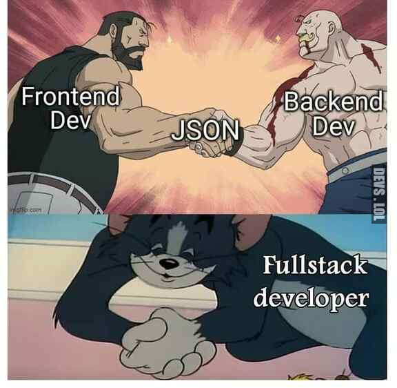

История
профессии
😎 Профессия 👉🏽
Frontend-разработчик
Когда приходит мысль стать программистом, ты вдохновенно открываешь справочник Шилдта по С, заказываешь книгу Страуструпа по С++ и учишься шутить про указатели и рекурсию. Но всё меняется, когда в твою жизнь случайно приходит JavaScript. «Какой он простой, понятный, какой классный синтаксис! Всё, решено, буду писать сайты», — думает начинающий программист. Но потом выбранный стек меняет своё дружелюбное лицо, и ты уже не можешь остановиться, потому что ты один из них — фронтенд-разработчиков. Тех самых, которые «смотрящие за мордой сайта».
ххх: на чём пишешь фронтенд?
yyy: на костылях и велосипедах
ххх: ммм, хороший фреймворк!
Bash.im
На пороге третьего десятилетия XXI века кажется, что интерес сместился в сторону мобильных приложений и IoT. Но это только кажется. Подумайте, сколько сайтов вы посещаете в неделю и какие мобильные приложения у вас установлены. Скорее всего, все информационные ресурсы вы просматриваете на полных и мобильных версиях сайтов, а мобильные приложения выполняют «специфические» задачи. О вымирании веба говорить слишком рано.
Одним из трендов стали PWA (Progressive Web Apps), которые называют будущим мобильного веба. PWA — это мобильный сайт здорового человека. Они дают пользователю возможности, обычно ассоциированные с нативным мобильным приложением: мгновенная загрузка, значок на экране гаджета, уведомления, работа в полноэкранном режиме и т.д.
🤔 Кто это? 👉🏽
Frontend-разработчик
Фронтенд-разработчики отвечают за разработку внешнего интерфейса сайта, то есть того, как бэкенд и дизайн сайта взаимодействуют с пользователем. Профессия фронтенд-разработчика стала сложнее и многокомпонентнее, чем 7-10 лет назад. Фронтендеры отвечают за логичную работу всех компонентов сайта, включая контент, кнопки, изображения, навигацию и внутренние ссылки. Они проектируют структуру сайта, работают с требованиями пользователей и отвечают за клиентскую сторону интерфейса.
🏢 Где нужен? 👉🏽
Frontend-разработчик
Фронтенд-разработчики нужны везде, где есть веб-разработка: компании, для которых сайт — важнейшая коммерческая составляющая, интернет-магазины, информационные порталы, разработчики веб-приложений для бизнеса, развлекательные сервисы и проч.
💼 Требования 👉🏽
Базовые требования к профессионалу
Хорошо оплачиваемый фронтенд-разработчик должен владеть не только базовым языком программирования, но также знать библиотеки и фреймворки. Важно владение принципами веб-дизайна, UI/UX, понимание потребностей разных групп пользователей, навыки мониторинга производительности и состояний сайта, проектирования архитектуры веб-приложения, тестирования сайтов и оптимизации разработанных приложений.
🎓 Где учиться? 👉🏽
Frontend-разработке
Для успешного трудоустройства желательно иметь высшее образование. Онлайн-школы и курсы могут помочь систематизировать знания, но только ежедневный кодинг и анализ работы кода помогут прокачаться как разработчику.
📚 Лучшие книги
и средства обучения 👉🏽
Как прокачаться в Frontend
У фронтендера три основных пути развития: внутри фронтенд-стека, переход на полный стек (фуллстек-разработчик) или на менеджерские позиции. Веб меняется быстро, но важно думать о пользователях и вносить только необходимые изменения, изучая новое и пробуя его на пет-проектах.
- 📙Стив Макконнелл «Совершенный код». Просто читайте эту книгу и впитывайте то, что там написано. Вы сразу (нет, не сразу) поймёте, что такое грамотная разработка, и чем она отличается от говнокода.
- 📙 htmlbook.ru — просто добавьте этот сайт в закладки, закреплённое и в своё сердце. Это великолепная энциклопедия веб-разработчика на русском языке с адекватной и удобной структурой.
- 📙Книги Кайла Симпсона — ищите то, что вам нужно и то что актуальной даты издания. Он очень круто пишет и структурирует информацию о JavaScript.
- 📙Хавербеке Марейн «Выразительный JavaScript. Современное веб-программирование» — практически ценная книга от настоящего профессионала. Если не ошибаюсь, у «Питера» пережила издание в 2019 году, свежак.
- 📙 webref.ru — очень классный сайт для разработчиков веба, разбирайтесь, обучайтесь.
- 📙Книги по вашей технологии — переводные или в оригинале (ищите O'Reilly).
- 📙 codecademy.com — люблю этот сайт и иногда использую для поддержания мозгов в порядке. Интерактивный сайт для обучения разработке на разных языках программирования на английском, с самого низкого, нулевого, уровня. Есть базовый бесплатный курс, есть платный — 15$ в месяц.
- 📙 htmlacademy.ru — есть бесплатные курсы, части курсов и блог. Берите все знания, что сможете унести.
- 📙Бесплатные курсы и видео, которых бесконечно много на Youtube на русском и английском языках. Просто слушайте, повторяйте, систематизируйте знания. Для начала подойдут любые, очень скоро вы научитесь отличать крутые вещи от дилетантских.
- 📙Ну и конечно — не бойтесь и не стесняйтесь коммитить в open source проекты (начните с небольших, а там и до библиотек, и до фреймворков дойдёте), ковыряйте чужой код, изучайте принципы и алгоритмы.
⚠️ Данная статья является частичным резюмированием другой чужой статьи